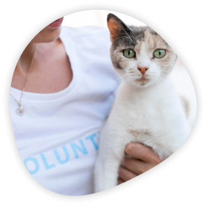
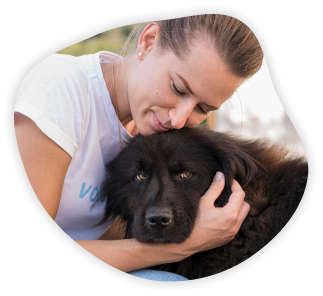
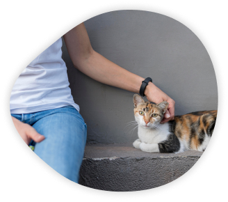

Los amigos no se compran Adoptar salva y cambia vidas
¡Encontrá a tu próximo mejor amigo!
¿Qué es MetaPata Refugio?
Somos un asociación civil uruguaya sin fines de lucro. Llevamos más de 10 años ayudando a animales que se encuentran en situaciones críticas de abandono, rescatándolos, cuidándolos y brindándoles toda la atención necesaria para poder recuperarse y prepararlos para buscar el hogar definitivo que todos se merecen. MetaPata no recibe ningún tipo de subvención pública, sustentándose únicamente con los aportes y donaciones de personas que quieren colaborar y ayudarnos a ayudar a todos los animales que tenemos a cargo. A día de hoy son 120 en el refugio y +500 animales que ya han encontrado hogar.
Rescatamos
A nuestro refugio llegan animales que han vivido situaciones muy duras las cuales no solo afectan lo físico, sino también lo emocional.
Curamos
Nosotros nos encargamos de curarlos. De curar sus heridas físicas y emocionales para que vuelvan a confiar y a creer.
Buscamos hogar
Cuando ya se encuentran listos, nos encargamos de buscarles el mejor hogar para que puedan vivir allí con la calidad de vida que se merecen.
¿Cómo ayudarnos?
Siempre hay una manera. Si te gustaría ayudarnos a mejorar la calidad de vida de nuestros 120 animales, podés elegir una de las siguientes formas:
Donaciones
Las donaciones son nuestro sustento y lo que nos ayuda a que el refugio pueda seguir funcionando.
¡Próximamente! Apadrinar
Si quieres ayudar a alguno de nuestros animales pero no puedes adoptarlo, ¡apadrinar es la opción para ti!